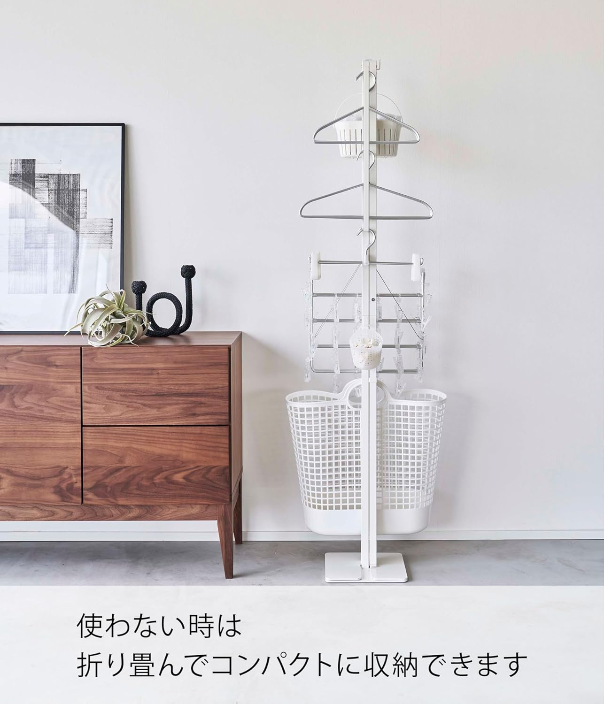

洗濯物を部屋干ししたいのに、物干しスタンドを出すと生活感が一気に出る。使わない日は畳んで隅に寄せても、それなりに場所を取る。来客の予定が入ると、干しかけの洗濯物ごとどこかへ移動させることになる——室内干しの不満は、干せる量よりも「置いておく姿」と「片付けにくさ」に集約されることが多い。
山崎実業のインテリア雑貨ブランド「tower（タワー）」の折り畳み室内物干し（型番6619／ホワイト）は、その不満に対して「使うときは家族分をまとめて干せる幅、使わないときは幅25cmの一本の柱」という振れ幅で答えようとした製品だ。参考価格は通常12,100円、執筆時点の実売は9,985円（税込・変動あり）。この記事では実機の使用感ではなく、山崎実業が公開しているスペックと公表情報をもとに、この室内物干しが一人暮らしから家族用途までどこまで実用になるのかを客観的に整理していく。
tower 折り畳み室内物干し（6619）とはどんな物干しか
本製品は、山崎実業のtowerシリーズに属する自立式の室内物干しだ。使用時は約W175×D25×H160cmと横に大きく広がる竿型で、2本の支柱の間に長いハンガーパイプを渡して洗濯物を干す構造になっている。本体はスチール（粉体塗装）で、キャップ部分がポリプロピレン。重量は約7.9kgで、白物家電のような可動部やモーターを持たない、あくまで「置いて使う道具」だ。
「幅175cm」の大容量と「幅25cm」の収納性
この物干しの設計上の要点は、使用時の幅と収納時の幅の差にある。使用時はハンガーパイプの内寸で約W150×H159cmを確保しながら、使わないときは2本の支柱を重ねて約W25×D25×H161cmまで畳める。つまり広げれば家族分の洗濯物を一度に掛けられる竿でありながら、畳めば奥行きも幅も25cm四方の一本の柱になる。省スペース性とおしゃれな佇まいを両立させたい人に向けた、towerらしい割り切りの効いた設計といえる。
主要スペック
| ブランド | 山崎実業（Yamazaki）／towerシリーズ |
|---|---|
| 製品名 | 折り畳み室内物干し |
| 型番 | 6619（ホワイト）／6620（ブラック） |
| 使用時サイズ | 約W175×D25×H160cm |
| 収納時サイズ | 約W25×D25×H161cm |
| ハンガーパイプ内寸 | 約W150×H159cm |
| 本体重量 | 約7.9kg |
| 耐荷重 | ハンガーパイプ全体：約7.5kg／フック1つ：約1kg／洗濯ハンガー収納部1段：約1kg |
| 素材 | 本体：スチール（粉体塗装）／キャップ：ポリプロピレン |
| カラー | ホワイト（6619）／ブラック（6620） |
| キャスター | なし（固定脚） |
| 組み立て | 必要（付属の六角レンチ×2で連結） |
| 付属品 | 六角レンチ×2 |
| 参考価格 | 通常12,100円／執筆時点の実売9,985円（税込・変動あり） |
耐荷重は「ハンガーパイプ全体で約7.5kg」という値が中心の指標になる。フックや洗濯ハンガー収納部のように部位ごとに上限が分かれている点も含め、公式が数値で開示しているのは室内物干しとしては丁寧な部類だ。逆に、乾燥にかかる時間や送風機能のような「乾かす性能」を持つ製品ではないので、そこは後述するように別の道具と役割を分ける前提で見ておきたい。
スペックから読み取れる、この物干しの実力
折りたたみは支柱を重ねるだけ。使わない日は幅25cm
本製品のもっとも分かりやすい価値が収納性だ。使用時は幅175cmまで広がるが、片方の支柱をもう片方に重ねることで、収納時は約W25×D25×H161cmの細い柱になる。極端に小さくなるわけではないが、家具と壁のわずかな隙間や、部屋の角に立てておける水準にはなる。

操作は、使うときに片方の支柱を150cm先まで運び、竿部分を伸ばしてフックに引っ掛けるだけとされている。ネジを外したり工具を使ったりする「分解」ではなく、日常の開閉として畳める設計だ。毎日出し入れする道具である以上、この開閉が手軽であることは、そのまま「使い続けられるか」に直結する。来客時にさっと畳んで隅に寄せたい、という用途にも噛み合う。
家族4人分・脱水後5kgまでの収納力
気になるのは、一度にどれくらい干せるかだろう。ハンガーパイプの耐荷重は約7.5kg。山崎実業は脱水後で約5kgまでの洗濯物に対応できるとしており、これは一般的な目安とされる1人1日あたり約1.5kgの洗濯物量に照らすと、家族3〜4人分に相当する。幅150cmの竿にハンガーを並べられるため、Tシャツやシャツをまとめて掛けても間隔を確保しやすい。
一人暮らしの視点で見ると、5kg・幅150cmは十分に余裕がある容量といえる。日常の洗濯であれば干す場所が足りなくなることはまず考えにくく、むしろ「畳んだときに幅25cmで済む」ことのほうが一人暮らしの部屋では効いてくる。家族用途とワンルーム、どちらでも容量不足で困る場面は少ない設計といえる。
生活感が出にくい、towerらしいデザイン
towerシリーズの一貫した特徴は、白か黒のマットな塗装で構成された、線の細いミニマルな見た目にある。本製品もホワイト（6619）とブラック（6620）の2色展開で、粉体塗装のスチールらしい均質な質感を持つ。一般的な物干しスタンドが持つ「いかにも生活用品」という印象を避けたい人にとって、インテリアに馴染むおしゃれな外観は選ぶ理由の中心になり得る。
デザインの評価は主観に左右されるが、少なくともカラーが2色に絞られ、余計な装飾のない直線的な構成であることは、部屋の中に出しっぱなしにしても浮きにくい方向に働く。壁や床の色に合わせて白と黒を選べる点も、生活感を抑えたい層には現実的な判断材料になる。
除湿機・サーキュレーターとの組み合わせを前提に考える
本製品はあくまで「干す場所」であり、乾かす機能は持たない。したがって部屋干しの生乾き臭が気になる季節は、除湿機やサーキュレーターと組み合わせて風を当てる運用が前提になる。幅150cmの竿に洗濯物を等間隔で掛けられる構造は、下から風を送ったときに空気が抜ける隙間を作りやすく、送風との相性そのものは悪くないと考えられる。
ただしこれは構造から言える範囲の話で、当サイトで乾燥時間を実測したわけではない。「物干し単体で早く乾く」という性質の製品ではないことは、購入前にはっきり認識しておきたい。乾かす工程まで含めて部屋干しを快適にしたい場合は、後述するように乾燥まで担う道具と組み合わせるのが現実的だ。
布団やシーツは干せるか
大型の洗濯物についても触れておく。ハンガーパイプの内寸は約W150×H159cmで、竿にシーツやバスタオルを掛けること自体は寸法上可能だ。一方で耐荷重はパイプ全体で約7.5kgなので、水を含んで重くなる大判の寝具を無理に掛けると上限に近づきやすい。掛け布団のような厚みのある寝具を広げて干す用途は、そもそも竿型の室内物干しが想定する使い方から外れると考えたほうが妥当だろう。
シーツ・カバー類・大判タオルといった「面は広いが軽い」洗濯物までが現実的な範囲で、厚手の布団は専用の布団干しや屋外を検討したほうがいい、という切り分けになる。ここも公式の耐荷重という数値から読み取れる範囲にとどめ、断定は避けておく。
- 使用時W175cm・脱水後5kgの収納力。
家族3〜4人分の日常の洗濯物を一度に干せる容量があり、一人暮らしには余裕がある。 - 収納時は約W25×D25×H161cmまで畳める。
使わない日は幅25cm四方の一本の柱になり、家具の隙間や部屋の角に立てておける。 - 支柱を重ねるだけの開閉。
工具を使う分解ではなく、来客時にさっと畳める日常動作として設計されている。 - 耐荷重が部位ごとに数値で開示されている。
パイプ全体約7.5kg・フック1つ約1kgなど、掛けてよい量が事前に把握できる。 - towerシリーズらしいミニマルな外観。
白・黒のマット塗装で、出しっぱなしでも生活感が出にくい。
スペックから見える、気になる点・デメリット
横からの衝撃に弱く、転倒リスクがある
購入前に最も意識しておきたいのが安定性だ。本製品は幅175cm・高さ160cmと大きく広がる竿型で、2つの支柱の脚で自立する構造になっている。背が高い竿型という構造の性質上、縦方向の荷重には耐える一方で、横方向の力には弱くなりやすいと考えられる。子どもやペットがぶつかる、洗濯物を片側に偏って掛けるといった状況では、ぐらつきや転倒の可能性を頭に入れておくべきだろう。
対策としては、洗濯物を左右バランスよく掛ける、通路や人の動線を避けて設置する、といった置き方の工夫が現実的だ。キャスターのない固定脚である点は、裏を返せば不用意に動かない安定要素でもあるが、脚の設置面積に対して背が高い形状であることは変わらないため、設置場所は選んだほうがいい。
開封時に組み立てが必要
本製品は完成品ではなく、開封後に組み立てが必要だ。付属の六角レンチ2本で連結パイプを組む方式で、大人1人でおよそ30分程度が目安とされている。日々の開閉（畳む・広げる）とは別に、最初の一度だけこの組み立て工程が挟まる点は理解しておきたい。
電動工具は不要で特別な技術も要らないが、「箱から出してすぐ使える」タイプではない。組み立てが苦手な人や、届いたその日にすぐ使いたい人にとっては、この初期セットアップがひと手間になる。
キャスターがなく、移動はやや手間
脚にキャスターは付いていない。約7.9kgという重量は持ち上げられない重さではないが、洗濯物を掛けたまま部屋を移動させる、日当たりのいい窓際へ動かす、といった運用は想定しにくい。基本的には「置く場所を決めて使う」道具であり、こまめに動かして使いたい人は、キャスター付きの物干しスタンドと比較したほうが後悔が少ないだろう。
物干しとしては価格が高め
参考価格は通常12,100円で、実売でも9,985円（執筆時点）。折りたたみ式の室内物干しとしては高めの価格帯にあたる。この価格には、towerブランドのデザイン、粉体塗装のスチール本体、部位ごとに数値化された耐荷重といった要素が含まれるが、「干せればいい」という割り切りで選ぶなら、より安価な選択肢はいくらでもある。デザインと省スペース性にどれだけ価値を置けるかで、割高に感じるか妥当と感じるかが分かれる。
- 横からの衝撃に弱く転倒リスクがある。
背が高い竿型のため、左右バランスよく掛け、人の動線を避けて設置したい。 - 開封時に組み立てが必要。
六角レンチで連結する方式で、目安は大人1人で約30分。箱から出してすぐ使える製品ではない。 - キャスターがない。
約7.9kgの固定脚で、掛けたまま移動させる使い方には向かない。 - 乾燥機能は持たない。
生乾き臭が気になる季節は除湿機・サーキュレーターとの併用が前提になる。 - 厚手の布団には向かない。
耐荷重約7.5kgの竿型で、干せるのはシーツ・カバー類など「広いが軽い」洗濯物まで。 - 物干しとしては価格が高め。
実売1万円弱で、デザインと省スペース性に価値を見いだせるかが判断の分かれ目。
干したあと、どう乾かすか
前述のとおり、本製品は「干す場所」であって「乾かす道具」ではない。部屋干しを本当に快適にするには、干す・乾かすの2工程で道具を分けて考えるのが現実的だ。物干しで洗濯物を広げ、乾燥は送風や温風に任せる、という組み合わせである。
乾かす工程まで一台で解決したいなら、工事不要・約5kg対応のハンガーラック型衣類乾燥機カワクーナL（KQ-003BLW）が候補になる。掛けた洗濯物に温風を当てて乾かすタイプで、部屋干しの生乾き臭対策としてtowerの物干しと役割がきれいに分かれる。乾燥力・電気代・注意点を別記事で整理している。
カワクーナL 衣類乾燥機のレビューを読む レビュー ›こんな人に向いている
スペックから見て、この物干しがはっきり合うのは「部屋干しの量は確保したいが、生活感と置き場所は妥協したくない人」だ。具体的には、towerシリーズでインテリアを揃えていて物干しも見た目を揃えたい人、来客が多く使わない日はコンパクトに畳んでおきたい人、家族3〜4人分の洗濯物を一度に干せる幅が欲しい人。一人暮らしでも、畳めば幅25cmで済むため、ワンルームで物干しの置き場所に困っている人には有力な選択肢になる。
逆に、掛けたまま頻繁に移動させたい人はキャスター付きのスタンドを、厚手の布団を干したい人は専用の布団干しを検討したほうがいい。設置スペースに小さな子どもやペットの動線が重なる家庭は、転倒リスクを踏まえて置き場所を確保できるかを先に考えたい。価格を最優先し「干せれば見た目は問わない」という人にとっては、より安価な物干しのほうが納得しやすいだろう。
総評
tower 折り畳み室内物干し（6619）は、干せる量そのもので勝負する製品ではなく、「使うときの容量」と「使わないときの姿」を両立させたところに価値を置いた室内物干しだ。使用時W175cm・脱水後5kgの収納力で家族分をまとめて干せる一方、畳めば幅25cm四方の一本の柱になり、towerらしいミニマルな外観で出しっぱなしでも生活感が出にくい。部位ごとに数値化された耐荷重など、公式の情報開示も室内物干しとしては丁寧だ。
一方で、背の高い竿型ゆえの転倒リスク、開封時の組み立て、キャスターがないこと、そして実売1万円弱という価格は、割り切って理解しておく必要がある。乾燥機能を持たないため、生乾き臭が気になる季節は除湿機やサーキュレーターとの併用が前提になる点も含めて、「干す道具」と割り切れるかが評価の分かれ目になる。デザインと省スペース性に価値を見いだせる人にとっては、日々の部屋干しの体験を静かに整えてくれる一台といえる。